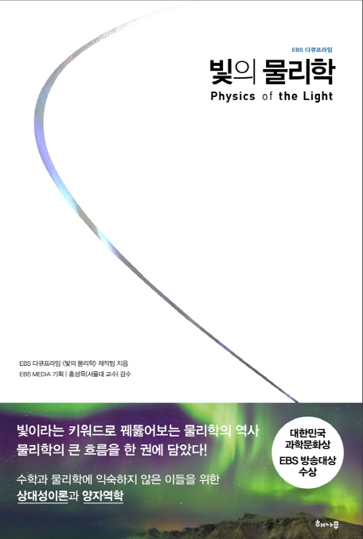
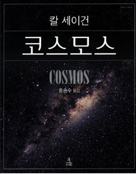
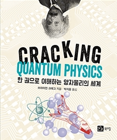

|  |
제목 : 빛의 물리학 (Physics of the Light) 저자 : 김형준 줄거리 : 갈릴레오, 뉴턴, 맥스웰, 아인슈타인, 코펜하겐 학파 과학자들부터 현대 끈이론 과학자들에 이르기까지, 빛이라는 하나의 키워드를 중심으로 현대 물리학의 역사를 들여다본다. 빛 속에 색이 있는 것인지 탐구했던 뉴턴, 빛처럼 빠른 속도로 날아가면 빛이 어떻게 보일지 궁금했던 아인슈타인 등 빛을 추적했던 물리학자들이 답을 찾아내가는 드라마틱한 순간들을 만나볼 수 있다. 인상깊은 점 : 빛이라는 키워드로 물리학의 역사를 다루는 책으로, 빛을 키워드로 삼아 현대 물리학의 두 축인 상대성 이론과 양자역학을 쉽게 풀어낸 점이 인상적이다. |
|  |
제목 : 코스모스 저자 : 칼 세이건 줄거리 : 책은 은하계 및 태양계의 모습과 별들의 삶과 죽음을 설명하는데 그치지 않고, 그러한 사실들을 밝혀낸 과학자들의 노력, 즉 별자리와 천문학과 우주탐험과 외계와의 교신 연구 등을 소개한다. 또한 우리 우주에는 다른 생명체가 존재할 것인지, 우주의 미래는 어떨 것인지 등의 철학적 질문도 던진다. 인상깊은 점 : <코스모스>는 우주의 놀라운 일들을 예상하고 그 아름다움과 매력을 잘 설명하고 있고, 과학적 영역에 철학적,종교적 질문을 던지는 점이 인상적이다. |
|  |
제목 : 한 권으로 이해하는 양자물리의 세계 (Cracking Quantum) 저자 : 브라이언 크레그 줄거리 : <한 권으로 이해하는 양자물리의 세계>는 우리 눈에 보이지 않고, 기이한 현상이 일어나는 섹?ㅔ를 낱낱이 파헤친다. 양자이론을 둘러싼 아인슈타인과 보어의 치열한 토론부터 슈뢰딩거의 고양이, 블랙홀 등 새롭게 등장한 개념까지 양자물리에 대한 모든 것을 소개한다. 인상깊은 점 : 이 책은 그동안 복잡하고 어렵게만 느껴졌던 양자물리의 세계를 명쾌하게 분석하는 점이 인상깊다. 고전물리뿐만 아니라 현대물리에 관심을 가지는 독자에게 훌륭한 입문서가 될 것이다. |